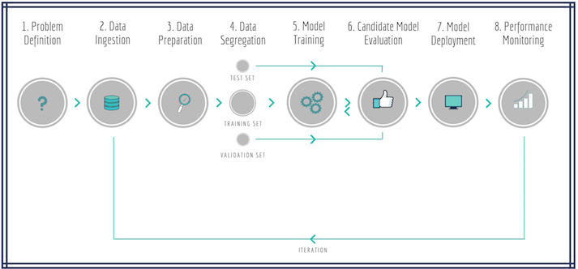
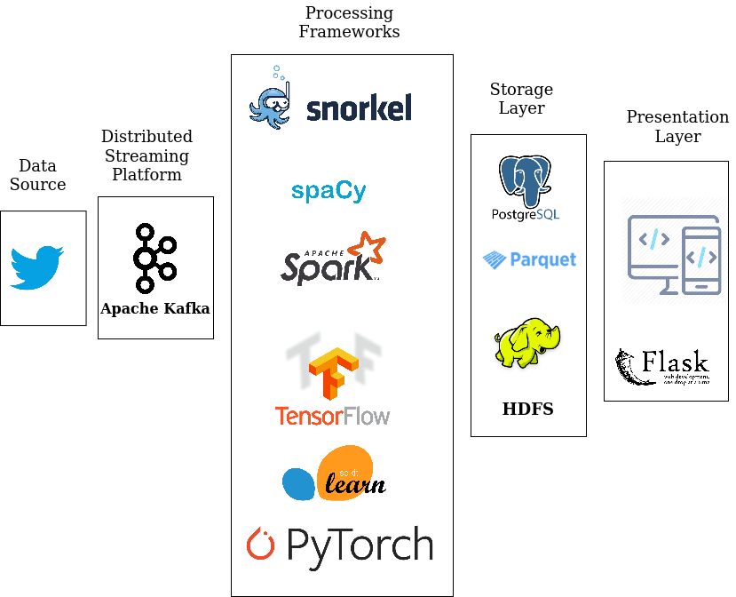
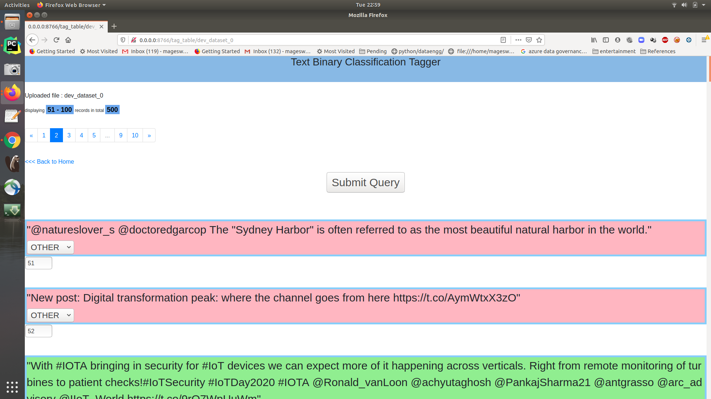

Streaming ML Classification with Active Learning Model¶
Requirements¶
Refer the following link for general architecture of our continuous integration ML pipelinetheory on Architecting a Machine Learning Pipeline
Create a pipeline with following diagram as reference…
Build ground up dataset for tweet classification (AI tweet or not) using the live streaming data
Dump the raw tweet data into a table in Postgresql DB called
streamingdbHave configuration to prefix the name of the raw tweet data and version config to dump the tables into DB
Use semi supervised methods to tag dataset, for example frameworks like [https://www.snorkel.org/](https://www.snorkel.org/
Build a UI tool to annotate the semi supervised tagged data to create golden dataset for ML training
Build a Naive Deep Learning/ Neural network model and evaluate it on golden/sem supervised dataset
Deploy the model, classify the text
Extract the web links from tweets and store the urls
Implementation¶
Problem Definition
Build a modular streaming ML/DL pipeline
Data Ingestion / Data Collection:
Tweets ---> Twitter Stream ---> Tweepy ---> Kafka Producer ---> Kafka Stream -- -> Spark Structured Streaming Consumer ---> Postgresql as one single raw data table
Data Preparation / Data Labelling and Segregation
Posgresql ---> Raw Dataset Table ---> Split ---> Train/Test/Dev/Snorkel dataset tables -- -> SSPLabeler(Snorkel Labeler) ---> Labelled Train/Test/Dev dataset stored in Postgresql & Disk Labelled Train/Test/Dev dataset on Posgresql---> Mannual UI Tagger ---> Train/Test/Dev dataset with golden label column on PosgresqlModel Training and Evaluation
Labelled Train/Test/Dev dataset ---> DL Model ---> Model Store
Deployment / Prediction on Live Stream
Model Store ---> Tensorflow Serving ---> TF API End Point Tweets ---> Twitter Stream ---> Tweepy ---> Kafka Producer ---> Kafka Stream -- -> Spark Structured Streaming Consumer ---> UDF(TF API End Point) -- -> Filtered AI Tweets ---> PostgresqlMonitoring / Dashboard
Postgresql ---> Flask API ---> Dashboard
Dataset tables:
Tables are suffixed with
run/version idstarting from0, refer respective bin/*.sh files for version configurations
| Table Name | Records | Info |
|---|---|---|
| raw_tweet_dataset_0 | 50K+ | Full Raw Dataset |
| deduplicated_raw_tweet_dataset_0 | ~ | Depulicated on text column |
| test_dataset_0 | 1000 | Test dataset |
| dev_dataset_0 | 500 | Dev dataset |
| snorkel_train_dataset_0 | 10K | Snorkel train dataset |
| train_dataset_0 | ~ | Model train dataset |

Configuration¶
How to run?¶
There are two ways of running, that is on docker or on your local machine. In either case, opening the terminal is the difference, once the terminal is launched, the steps are common.
To get a new terminal for our docker instance run : docker exec -it $(docker ps | grep sparkstructuredstreaming-pg | cut -d' ' -f1) bash
Note: We pull our container run id with $(docker ps | grep sparkstructuredstreaming-pg | cut -d' ' -f1)
This example needs multiple terminals:
On each terminal move to the source root folder:
# Local machine cd /path/to/spark-streaming-playground/ # On Docker 'spark-streaming-playground' is mountes as a volume at /host/ cd /host export PYTHONPATH=$(pwd)/src/:$PYTHONPATH
Data collection
There can be of two ways
First way is dumping data from live stream, which may take few hours depending up on the frequency of the AI/ML/Big Data tweets
#[producer] Guake terminal name! vim bin/data/start_kafka_producer.sh bin/data/start_kafka_producer.sh #[dump data] #by default 50K tweets (25K AI tweets + 25K False positive) will be collected and dumbed into the table vim bin/data/dump_raw_data_into_postgresql.sh bin/data/dump_raw_data_into_postgresql.shSecond way is use the dump as part of this repo
python src/ssp/posgress/dataset_base.py --mode=upload # If there is any Postgresql permission error related to schema, run below command on `psql` terminal GRANT ALL ON schema public TO sparkstreaming;
Data preparation for model training, with default snorkel labeller
#[ssp data] vim bin/data/prepare_ssp_dataset.sh # check the version points to the one we wanted, to begin with it has to be 0 vim config/default_ssp_config.gin # check for `SSPMLDataset` params bin/data/prepare_ssp_dataset.shSnorkell Label Function coverage will be printed as part of the logs, as follows:
j Polarity Coverage Overlaps Conflicts is_ai_tweet 0 [1] 0.3125 0.0587 0.0587 is_not_ai_tweet 1 [0] 0.3469 0.1597 0.0000 not_data_science 2 [0] 0.1084 0.0983 0.0482 not_neural_network 3 [0] 0.0036 0.0030 0.0030 not_big_data 4 [0] 0.1133 0.1048 0.0057 not_nlp 5 [0] 0.0132 0.0120 0.0004 not_ai 6 [0] 0.0084 0.0067 0.0059 not_cv 7 [0] 0.0081 0.0068 0.0016
Mannual tagger 
#[tagger] bin/flask/tagger.shEvalaute the Snorkel labeller with respect to hand labels
#[snorkell] bin/models/evalaute_snorkel_labeller.shTrain Deep Learning model
#[DL Text classification Model] bin/models/build_naive_dl_text_classifier.shStart Tensorflow Serving
#[Tensorflow Serving] export MODEL_DIR=/home/mageswarand/ssp/model/raw_tweet_dataset_2/naive_text_classifier/exported/ # test the model saved_model_cli show --dir ${MODEL_DIR}/1/ --all # start the serving server tensorflow_model_server \ --rest_api_port=8501 \ --model_name="naive_text_clf" \ --model_base_path="${MODEL_DIR}"Start live Spark streaming for AI/Data Science tweet classification
# [Spark Streaming] bin/nlp/spark_dl_text_classification_main.sh
Take Aways / Learning’s¶
TODOs
References
https://towardsdatascience.com/custom-transformers-and-ml-data-pipelines-with-python-20ea2a7adb65
https://towardsdatascience.com/how-to-build-a-complex-reporting-dashboard-using-dash-and-plotl-4f4257c18a7f
https://github.com/ucg8j/awesome-dash
https://github.com/tensorflow/serving
https://github.com/tensorflow/serving/blob/master/tensorflow_serving/g3doc/serving_kubernetes.md TODO